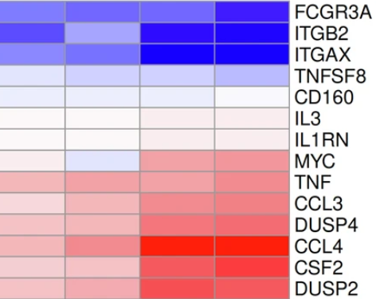
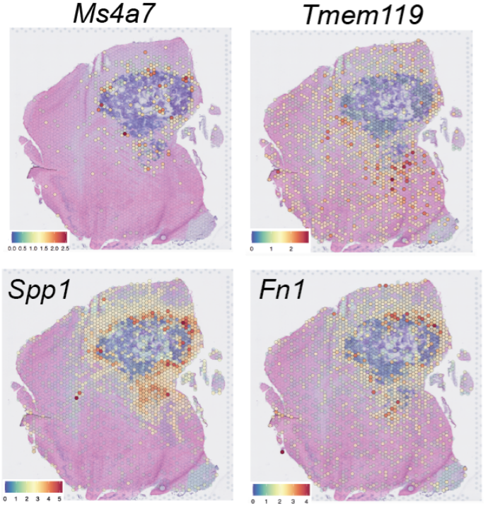
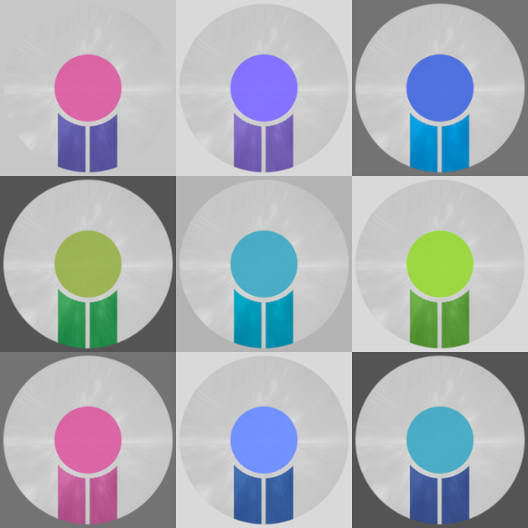

Heterogeneity of human immune responses in cancer.
Adaptive immune responses in solid tumors
The mechanisms underlying tumor-immune evasion and therapy resistance arise from a complex interplay between tumor-intrinsic factors and the patient-specific tumor microenvironment. The adaptive anti-tumor immune response extends beyond the paradigm in which CD8 T cells can recognize tumor antigens and eliminate tumor cells by means of cellular cytotoxicity. In fact, a variety of different adaptive immune cells are educated towards tumor antigens in draining lymph nodes or in lymphoid aggregates also known as tertiary lymphoid structures that are formed within a tumor itself.
Our research group aims to understand the molecular architecture and cellular dynamics of adaptive immune responses and tertiary lymphoid structures by integrating high-dimensional data from spatial transcriptomics, single-cell transcriptomics and adaptive immune receptor repertoire profiling. We collaborate with multiple clinical partners to study adaptive immune responses in different types of tumors.

Tertiary lymphoid structures in glioma
Gliomas respond poorly to therapy and are considered immunologically “cold” tumors. In this study we identify tertiary lymphoid structures (TLSs) in a subset of gliomas that show signs of functional adaptive immune activation such as clonal lymphocyte expansion and plasma cell formation. These functional TLSs are associated with longer overall patient survival and an immune-permissive tumor microenvironment. Such TLSs may represent a key determinant of glioma immune landscape, with clinical relevance. Cakmak et al. Immunity 2025.
Data science for collaborative research
Translational research projects often require the integration and analysis of diverse molecular and clinical datasets through close interdisciplinary collaboration. Our research group specializes in the analysis of high-dimensional molecular and spatial data in partnership with experimentalists and clinicians, ensuring that computational results are interpretable and actionable. We emphasize transparent data handling, clear communication of analytical results, and thorough documentation to make research outputs reproducible and FAIR (Findable, Accessible, Interoperable, and Reusable). By combining expertise in data science and domain knowledge, we enable robust and collaborative discoveries across disciplines.

Immunotherapy at the single-cell level
In this study we collaborated with the team of Prof. Dr. Evelyn Ullrich to explore the effect of genetic modifications in CAR-NK cells. Data type: CITE-seq. Bexte et al. Nat Commun 2024.

Combination therapy in brain metastasis
In this study we collaborated with the team of Prof. Dr. Lisa Sevenich to explore the effect of a combination therapy on anti-cancer immunity in brain metastasis. Data types: single-cell and spatial transcriptomics. Salamero-Boix et al. bioRxiv 2024.
Computational methods for human immunogenetics
Immune molecules such as B and T cell receptors, human leukocyte antigens (HLAs) and killer Ig-like receptors (KIRs) are encoded in the most diverse genetic loci in the human genome. Bioinformatic methods commonly used to analyse immune responses in large patient cohorts do not take into account this immunogenetic diversity, which leads to erroneous quantification of important immune mediators and impaired inter-donor comparability. Our research group develops robust bioinformatic methods and software tools for reproducible research on human immune responses and immunogenetic diversity in multidimensional immunological datasets.

Software packages
immunotation is a R/Bioconductor package that provides tools for consistent annotation of HLA genes in typical immunoinformatics workflows.
SingleCellAlleleExperiment defines a R/Bioconductor S4 class that enables annotation of immune genes such as HLAs, Igs and KIRs at allele and functional level.